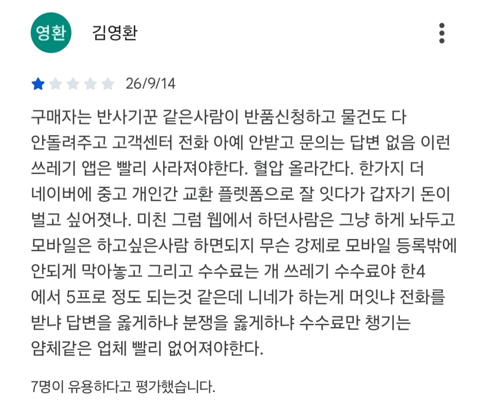

1. 구매자가 수령할 때까지 돈 묶임, 빨간날 끼면 한세월
2. 나는 잘 보냈는데 구매자가 '누락된게 있는데요?' '이거 기스 뭐죠?' 하는 순간 머리 뜨거워짐
3. 구매자가 악의를 가지고 집에 숨겨놓은 뒤 내가 벽돌 보냈다며 더치트 등록하거나 하면 머리가 많이 뜨거워짐
4. 이 모든걸 감수하면서 이용하려 해도 안전거래 수수료 뜯기는게 은근 뼈아픔
안전거래 X
'구매자만' 안전한 거래 O

1. 구매자가 수령할 때까지 돈 묶임, 빨간날 끼면 한세월
2. 나는 잘 보냈는데 구매자가 '누락된게 있는데요?' '이거 기스 뭐죠?' 하는 순간 머리 뜨거워짐
3. 구매자가 악의를 가지고 집에 숨겨놓은 뒤 내가 벽돌 보냈다며 더치트 등록하거나 하면 머리가 많이 뜨거워짐
4. 이 모든걸 감수하면서 이용하려 해도 안전거래 수수료 뜯기는게 은근 뼈아픔
안전거래 X
'구매자만' 안전한 거래 O
난 그래서 팔 때는 안전거래 절대 안함. 대신 직거래 아니면 영통 걸어서 인증 다 해줌. 택배도 보내는 거 사진 다 찍어서 보내줌. 보내기 전에 혹시나 싶어 입금자명이랑 주소에 이름이랑 다르면 먼저 물어봄. 대책없이 걍 막 사려는 사람한테는 그렇게 사면 사기 당한다고 신중하게 사라고 이야기도 함 ㅋㅋ
당근도 똑같애.. 멀쩡한 걸 보내 줬는데 구매자가 기스 내 놓고 반품함..
당근에 중재 요청 했더니 반품 받으라네. ㅋㅋ
오히려 반대로 안전구매 아니면 판매자가
사기치기 쉬운 시스템인것도 이해를 해야지